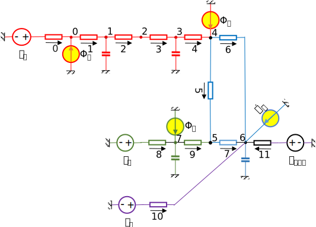

Inputs#

The inputs are modelled by temperature and flow rate sources. A control volume is a:
temperature source if the variation of its temperature is independent on the flow rate through the control surface (e.g., outdoor air temperature, indoor air temperature set-point);
flow-rate source if the variation of its flow-rate is independent on the temperature difference on the control surface (e.g., solar radiation, auxiliary heat gains).
The sources can be represented by the weather (e.g., outdoor air temperature, solar radiation) or by schedules (e.g., indoor air temperature set-point or internal gains).
Objectives:
Read the inputs for weather simulation.
Calculate the solar radiation on outdoor and indoor surfaces of the walls.
Define the schedules for indoor air temperature and auxiliary heat gains.
import numpy as np
import pandas as pd
import matplotlib.pyplot as plt
import dm4bem
Start and end time#
The simulation will be done from start_date to end_date indicated in the format MM-DD HH:MM:SS (month-day, hour:minute:second).
start_date = '02-01 12:00:00'
end_date = '02-07 18:00:00'
The weather data are for a typical meteorological year (TMY). The choice of 2000 for the year is arbitrary; it is used in order to respect the format YYYY-MM-DD HH:MM:SS.
start_date = '2000-' + start_date
end_date = '2000-' + end_date
print(f'{start_date} \tstart date')
print(f'{end_date} \tend date')
2000-02-01 12:00:00 start date
2000-02-07 18:00:00 end date
Input data set#
The input_data_set is a DataFrame which contains the values of the teperature and the flow-rate sources in time. In our case, the sources are (Figure 1):
\(T_o\) - outdoor air temperature, °C;
\(T_{i,sp}\) - setpoint of indoor air temperature, °C;
\(\Phi_o\) - solar radiation absorbed by the outdoor surface of the wall, W;
\(\Phi_i\) - solar radiation absorbed by the indoor surface of the wall, W;
\(\dot{Q}_a\) - auxiliary heat gains (i.e., occupants, electrical devices, etc.), W;
\(\Phi_a\) - solar radiation absorbed by the glass, W.

Figure 1. Thermal circuit with temperature and flow-rate sources
The temperature and flow-rate sources are obtained from weather data (\(T_o\), \(\Phi_o\), \(\Phi_i\), \(\Phi_a\)) and from schedules (\(T_{i,sp}\), \(\dot{Q}_i\)).
Weather: outdoor temperature and solar radiation#
Dynamic simulation needs time series of weather data for air temperature, direct solar radiation on a normal surface and diffuse solar radiation on an horizontal surface (see the tutorial on Weather data and solar radiation).
From the weather data, we select:
hourly outdoor air temperature, °C;
hourly solar direct normal irradiance (or beam radiation), W/m²;
hourly solar diffuse horizontal irradiance (or diffuse sky radiation), W/m²;
and delete the other data.
filename = '../weather_data/FRA_Lyon.074810_IWEC.epw'
[data, meta] = dm4bem.read_epw(filename, coerce_year=None)
weather = data[["temp_air", "dir_n_rad", "dif_h_rad"]]
del data
In the index of the DataFrame, the year is set to 2000 by convention and the data is selected from start date to end date.
weather.index = weather.index.map(lambda t: t.replace(year=2000))
weather = weather.loc[start_date:end_date]
Outdoor temperature#
There are two temperature sources:
\(T_o = [T_{o(0)}, T_{o(1)}, ..., T_{o(n-1)}]\) is the time series of the oudoor temperature at discrete time \(t = [t_0, t_1, ... , t_{n-1}]\).
\(T_{i, sp} = [T_{{i, sp}(0)}, T_{{i, sp}(1)}, ..., T_{{i, sp}(n-1)}]\) is the time series of the setpoint indoor temperature at discrete time \(t = [t_0, t_1, ... , t_{n-1}]\).
# Temperature sources
To = weather['temp_air']
Solar irradiance on the walls#
Total solar irradiance#
The characteristics of the outdoor walls are given in the file ./pd/bldg/walls_out.csv.
For the surface orientation given by slope, azimuthand latitude, and the albedo of the surface in front of the wall, by using the weather data, we can calculate the:
direct irradiance, W/m²,
diffuse irradiance, W/m²,
reflected irradiance, W/m²,
for hourly solar irradiance on a tilted surface.
# total solar irradiance
wall_out = pd.read_csv('./pd/bldg/walls_out.csv')
w0 = wall_out[wall_out['ID'] == 'w0']
surface_orientation = {'slope': w0['β'].values[0],
'azimuth': w0['γ'].values[0],
'latitude': 45}
rad_surf = dm4bem.sol_rad_tilt_surf(
weather, surface_orientation, w0['albedo'].values[0])
The total solar irradiance on the wall \(E_{tot}\), in W/m², is the sum of direct, diffuse, and reflected components.
Etot = rad_surf.sum(axis=1)
Note that if the walls have different orientations and/or tilts, the irradiance on each wall needs to be calculated.
Flow rate sources#
The radiation absorbed by the outdoor surface of the wall is:
where:
\(\alpha_{w,SW}\) is the absorptance of the outdoor surface of the wall in short wave, \(0 \leqslant \alpha_{w,SW} \leqslant 1\);
\(S_w\) - surface area of the wall, m²;
\(E_{tot}\) - total solar irradiance on the wall, W/m².
# solar radiation absorbed by the outdoor surface of the wall
Φo = w0['α1'].values[0] * w0['Area'].values[0] * Etot
The short wave (i.e. solar) radiation, in W, absorbed by the indoor surfaces of the wall is:
where:
\(\tau_{g,SW}\) is the transmission coefficient of the window glass, \(0 \leqslant \tau_{g,SW} \leqslant 1\);
\(\alpha_{w,SW}\) - absortion coefficient of the indoor surface of the wall in short wave, \(0 \leqslant \alpha_{w,SW} \leqslant 1\);
\(S_g\) - surface area of the window glass, m²;
\(E_{tot}\) - total solar radiation intensity on the wall, W/m²
# window glass properties
α_gSW = 0.38 # short wave absortivity: reflective blue glass
τ_gSW = 0.30 # short wave transmitance: reflective blue glass
S_g = 9 # m², surface area of glass
# solar radiation absorbed by the indoor surface of the wall
Φi = τ_gSW * w0['α0'].values[0] * S_g * Etot
The short wave (i.e. solar) radiation, in W, absorbed by the window glass is:
where:
\(\alpha_{g,SW}\) is the absortion coefficient of the glass window in short wave, \(0 \leqslant \alpha_{w,SW} \leqslant 1\);
\(S_g\) - surface area of the glass window, m²;
\(E_{tot}\) - total solar irradiation on the wall, W/m².
# solar radiation absorbed by the glass
Φa = α_gSW * S_g * Etot
Schedules#
Indoor air temperature set-point#
is the time series of the setpoint indoor temperature at discrete time \(t = [t_0, t_1, ... , t_{n-1}]\). Let’s consider the indoor temperature set-point constant, \(T_{i, sp} = 20 \, \mathrm{°C}\).
# indoor air temperature set-point
Ti_sp = pd.Series(20, index=To.index)
We can define hourly schedules of the indoor air temperature set-point.
Ti_day, Ti_night = 20, 16
Ti_sp = pd.Series(
[Ti_day if 6 <= hour <= 22 else Ti_night for hour in To.index.hour],
index=To.index)
Auxiliary heat#
is the time series of the internal sources (e.g., occupants, electrical devices, etc.) at discrete time \(t = [t_0, t_1, ... , t_{n-1}]\). Let’s consider the auxiliary heat flow \(\dot{Q}_a = 0 \, \mathrm{W}\) constant for the whole duration of the simulation.
# auxiliary (internal) sources
Qa = 0 * np.ones(weather.shape[0])
Input data set#
The input is formed by the vectors of time series of temperature sources \(\left [ T_o, T_{i,sp} \right ]^T\) and vectors of time series of the heat flow sources \(\left [ \Phi_o, \Phi_i, \dot{Q_a}, \Phi_a \right ]^T\):
where the input data set is:
\(T_o\): the time series vector of outdoor temperatures (from weather data), °C.
\(T_{i,sp}\): time series vector of indoor setpoint temperatures, °C.
\(\Phi_o\): time series vector of solar (i.e. short wave) radiation, in W, absorbed by the outdoor surface of the wall;
\(\Phi_i\): time series vector of short wave (i.e. solar) radiation, in W, absorbed by the indoor surfaces of the wall;
\(\dot{Q}_a\): time vector of auxiliary heat flows (from occupants, electrical devices, etc.), W.
\(\Phi_a\): time series vector of short wave (i.e. solar) radiation, in W, absorbed by the window glass.
# Input data set
input_data_set = pd.DataFrame({'To': To, 'Ti_sp': Ti_sp,
'Φo': Φo, 'Φi': Φi, 'Qa': Qa, 'Φa': Φa,
'Etot': Etot})
input_data_set.to_csv('./toy_model/input_data_set.csv')
Discussion#
Change the start date and end date to obtain longer periods and summmer periods.
Schedule the auxiliary heat sources.
References#
C. Ghiaus (2013). Causality issue in the heat balance method for calculating the design heating and cooling loads, Energy 50: 292-301, , open access preprint: HAL-03605823
C. Ghiaus (2021). Dynamic Models for Energy Control of Smart Homes, in S. Ploix M. Amayri, N. Bouguila (eds.) Towards Energy Smart Homes, Online ISBN: 978-3-030-76477-7, Print ISBN: 978-3-030-76476-0, Springer, pp. 163-198, open access preprint: HAL 03578578
J.A. Duffie, W. A. Beckman, N. Blair (2020). Solar Engineering of Thermal Processes, 5th ed. John Wiley & Sons, Inc. ISBN 9781119540281
Réglementation Thermique 2005. Méthode de calcul Th-CE.. Annexe à l’arrêté du 19 juillet 2006
H. Recknagel, E. Sprenger, E.-R. Schramek (2013) Génie climatique, 5e edition, Dunod, Paris. ISBN 978-2-10-070451-4
J.R. Howell et al. (2021). Thermal Radiation Heat Transfer 7th edition, ISBN 978-0-367-34707-0, A Catalogue of Configuration Factors
J. Widén, J. Munkhammar (2019). Solar Radiation Theory, Uppsala University